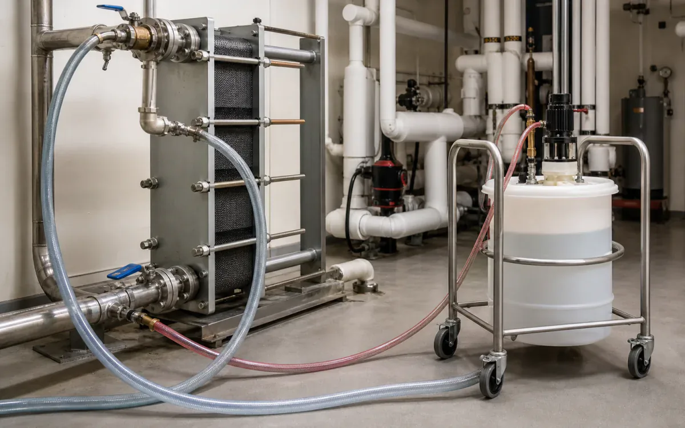
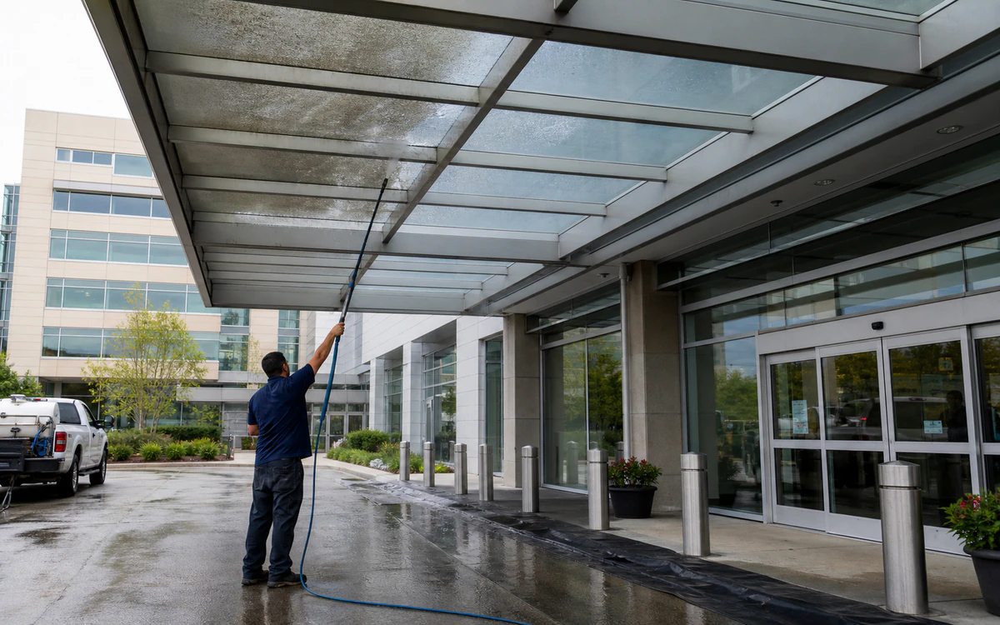

Recover mechanical and facility assets without turning maintenance into an event.
VertKleen HCR and Descaler target mechanical scale, CR lifts organic soil, and WaterSafe60 plus Purgo support recurring water-program needs.
- CleanCooling towers, closed loops, heat exchangers, steam-plant equipment, kitchen/laundry equipment, drains, and nonclinical hard surfaces
- RemoveScale, rust, corrosion product, grease, soap film, mineral deposit, and ordinary facility soil
- MethodPermit-controlled water-side cleaning or zone-specific facility cleaning followed by the facility's required disinfection step
- Operating limitsUse infection-control risk assessment, LOTO, ASHRAE 188/water-management controls, and facility-approved disinfectants. Cleaning is not disinfection.
- See job fit, process, and results
Why VertKleen fits Healthcare.
Lower odor and fume burden, occupied-site comfort, and equipment recovery keep work focused on the asset.
See VertKleen resultsWhat Healthcare buyers want from the switch.
Choose chemistry by what must be removed, then benchmark the field result against the incumbent workflow.
Track completed-task economics across labor, rinse and wastewater work, downtime, and return-to-service.
Generated scenes show common tasks. Field photos show VertKleen at work in real applications.




VertKleen products for Healthcare.
VertKleen options for Healthcare workflows.
Clean isolated mechanical and facility assets without crossing infection-control, occupied-care, or water-management boundaries.
Start with what must be cleaned, how the crew works, and what a successful result looks like.
- Task
- Clean isolated mechanical and facility assets without crossing infection-control, occupied-care, or water-management boundaries.
- Asset / substrate
- Cooling towers, closed loops, heat exchangers, steam-plant equipment, kitchen/laundry equipment, drains, and nonclinical hard surfaces
- Soil / deposit
- Scale, rust, corrosion product, grease, soap film, mineral deposit, and ordinary facility soil
- Starting chemistry
- WaterSafe60, Purgo, VertKleen CIP HCR, VertKleen CIP CR, VertKleen Descaler
- Concentration
- Set descaling concentration from the current label/user guide, deposit analysis, and metallurgy; all treatment dosing remains under the facility water plan.
- Process controls
- Record temperature, concentration, flow/agitation, contact time, rinse pH/conductivity, ventilation, barricade, and restart readings.
- Shutdown / containment
- Use infection-control risk assessment, LOTO, ASHRAE 188/water-management controls, and facility-approved disinfectants. Cleaning is not disinfection.
- Success check
- Mechanical trend recovery plus neutral/stable rinse; environmental ATP or microbiological release only when required and interpreted by the facility.
Open application records or request the SDS/TDS for your team.
Document IDs, revisions, and exact SKUs stay attached so buyers can move from chemistry fit to the right product file.
Bring us your Healthcare cleaning task.
The request opens with asset, soil, operating conditions, materials, wastewater route, and buying deadline already prompted.